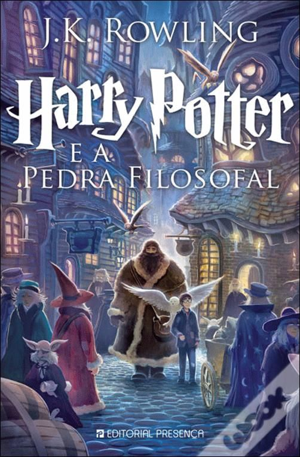
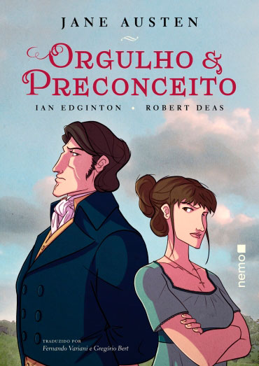

A Game of Thrones
Nas florestas ao norte de Winterfell, forças sobrenaturais se espalham por trás da Muralha que protege a região. E, nas Cidades Livres,
o jovem Rei Dragão exilado na Rebelião de Robert planeja sua vingança e deseja recuperar sua herança de família: o Trono de Ferro de Westeros.
1984
1984 mostra uma futura realidade distópica ocorrida no ano de 1984. Nessa realidade, a Inglaterra é comandada por um regime totalitarista em que todos são vigiados pelo Grande Irmão.
Winston Smith, protagonista da narrativa, questiona o poder vigente. O romance, publicado em 1949, está associado ao modernismo inglês.

Senhor dos Aneis
A história narra o conflito contra o mal que se alastra pela Terra-média, através da luta de várias raças:
Humanos, Anãos, Elfos, Ents e Hobbits - contra Orques, para evitar que o "Anel do Poder" volte às mãos de seu criador Sauron, o Senhor Sombrio.

Harry Potter e a Pedra Filosofal
A narrativa que inicia a saga Harry Potter conta a história de um menino bruxo que fica órfão, depois que o vilão Voldemort assassina seus pais a sangue frio.
O garoto se torna uma lenda no mundo mágico por ter sobrevivido ao feitiço mortal apenas com uma cicatriz na testa, mesmo sendo apenas um bebê.
Vinte Mil Léguas Submarinas
Uma expedição parte em busca de respostas mas é atacada pela criatura e três homens são lançados ao mar. Aronnax, Conselho e Ned Land são resgatados pelo suposto monstro,
que descobrem se tratar de um submarino, comandado pelo capitão Nemo. Ele os salva da morte, mas pede um preço alto: serão prisioneiros para sempre.
it
Durante as férias de 1958, em uma pacata cidadezinha chamada Derry, um grupo de sete amigos começa a ver coisas estranhas. Um conta que viu um palhaço,
outro que viu uma múmia. Finalmente, acabam descobrindo que estavam todos vendo a mesma coisa: um ser sobrenatural e maligno que pode assumir várias formas.

Frankenstein
O livro narra a história do ousado doutor Victor Frankenstein, cientista que se lança no experimento de retomar a vida de um ser inanimado.
Isso resulta na concepção de uma criatura sobre-humana e monstruosa que passa a lhe perseguir, tornando-se um arquétipo de seu próprio criador.
Moby-Dick
Versão definitiva da obra-prima Moby Dick, ou A Baleia, considerado um dos maiores romances norte-americanos. O livro traz o relato de um marinheiro letrado, Ishmael, sobre a última viagem de um navio baleeiro de Nantucket, o Pequod,
que parte da costa leste dos Estados Unidos - com sua tripulação multiétnica - rumo ao Pacífico Sul, onde encontra o imenso cachalote branco que, no passado, arrancara a perna do vingativo capitão Ahab.
Jane Eyre
Jane Eyre, romance de estreia da consagrada e renomada escritora inglesa Charlotte Brontë, narra a história de vida da heroína homônima.
Quebrando paradigmas e criticando a realidade vitoriana da época, Jane Eyre desafia o destino imposto às mulheres e as posições sociais que elas deveriam ocupar.
Crime e Castigo
Neste livro, Raskólnikov, um jovem estudante, pobre e desesperado, perambula pelas ruas de São Petersburgo até cometer um crime que tentará justificar por uma teoria:
grandes homens, como César ou Napoleão, foram assassinos absolvidos pela História.

Senhor dos Aneis
A história de Orgulho e Preconceito gira em torno das cinco irmãs Bennet, que viviam na área rural do interior da Inglaterra,
no século XVIII. Aborda a questão da sucessão em uma família sem herdeiros homens, dentro de uma sociedade patriarcal, onde o casamento era fundamental para as mulheres.

Assassinato no Expresso do Oriente
O detetive belga, então, embarca às pressas no Expresso do Oriente, inesperadamente lotado para aquela época do ano.
O trem expresso, porém, é detido a meio caminho da Iugoslávia por uma forte nevasca, e um passageiro com muitos inimigos é brutalmente assassinado durante a madrugada.